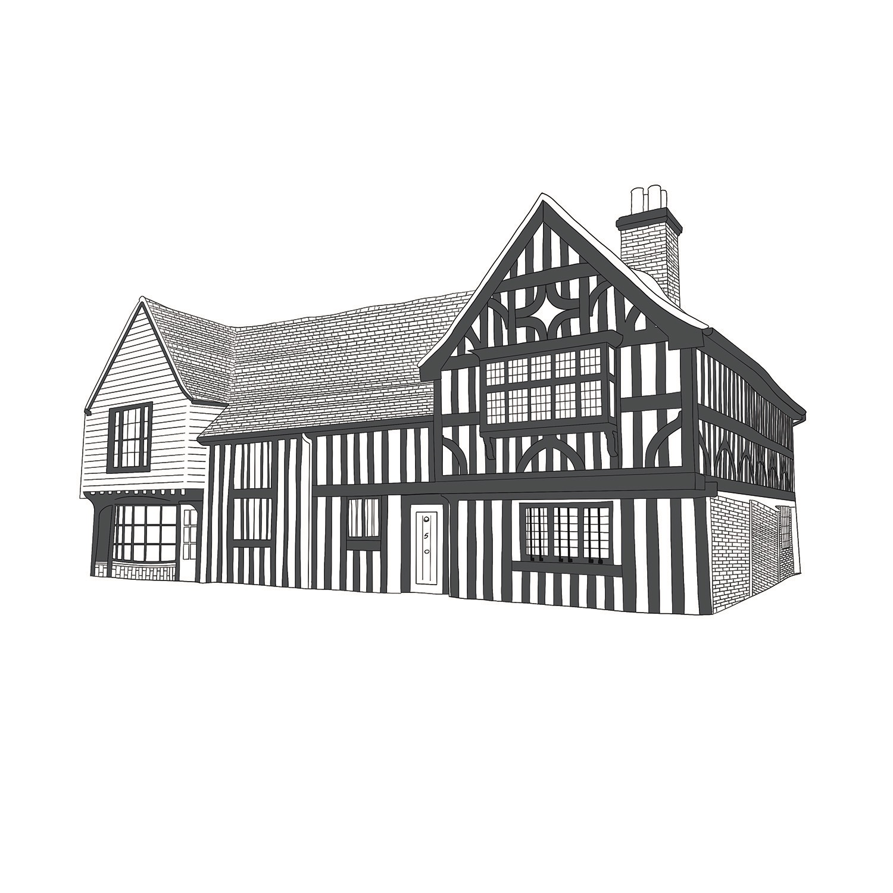
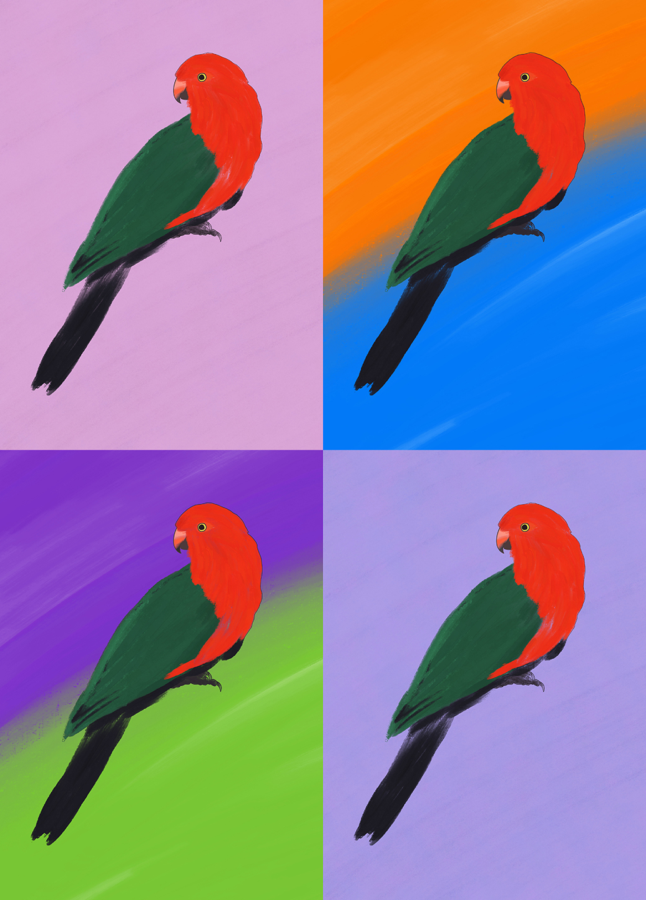

Pivoting into creativity, and tying together the skills I've picked up along the way.
My career so far has been about learning the things I care about - photography, video production, design - and slowly turning that into something more commercial. D&AD's Shift programme in 2025 was the turning point: pitching real ideas to real clients and agencies, picking up a couple of wins along the way, and learning what it actually takes for a good idea to survive a pitch room.
I'm now looking for my first role in strategy, somewhere I can keep building ideas that connect with people and do work that actually means something. Let's talk →
D&AD Shift 2025StrategyPhotographyVideo ProductionBrand IdentityArt Direction
Selected Work
Projects
A mix of spec campaigns from D&AD Shift, self-directed brand work, and on-set experience with agencies and independent clients.
On the Side
Small bits of art, works in progress


Contact
Let's talk
Want to work together, or just want to say hi? Currently looking for strategy internships and junior roles — always up for a conversation.
 Get in touch
Get in touch